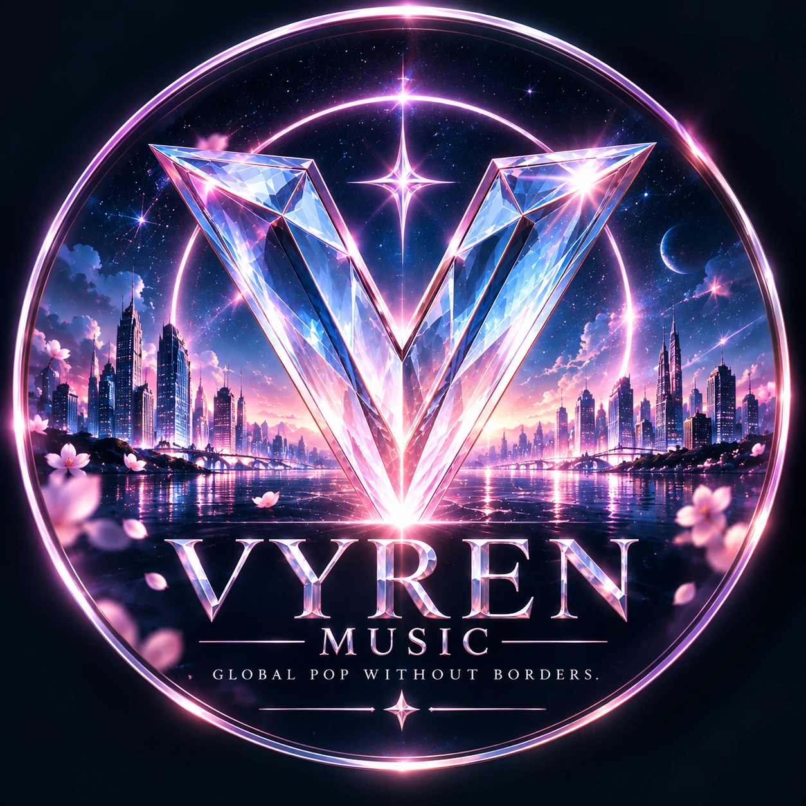

GLOBAL POP
VYREN MUSIC
Global Pop Without Borders.
LATEST RELEASE / 最新主打
VYREN 官方 YouTube ↗ WATCH THE OFFICIAL MUSIC VIDEO
WATCH THE OFFICIAL MUSIC VIDEO
ELENA / 愛黎娜
Light Me Alive
OFFICIAL MUSIC VIDEO · 官方 MV
從黑暗中的一點微光，到心跳再次閃耀。跟隨 ELENA 的歌聲，走進〈Light Me Alive〉的音樂與影像世界。
探索作品・分享這支 MV →ABOUT
Global Pop Without Borders.
VYRON MUSIC 旗下流行音樂品牌。原創音樂跨越語言、文化與聲音邊界，從情感流行、電子到電影感作品，打造面向全球的新世代聲音。
VISION
Music Beyond Borders.
以高辨識度音樂、品牌視覺與跨平台內容，持續拓展全球聽眾與下一代音樂體驗。
OFFICIAL CHANNELS
官方平台
OFFICIAL VIDEO PICKS
官方推薦影片
最新影片整理中，歡迎先前往官方頻道觀看。